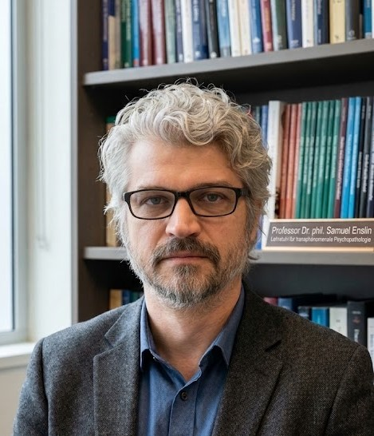

Interdisziplinärer Forschungsverbund für Wahrnehmungsstrukturierung, Epistemologie und transdisziplinäre Psychopathologie.
Die Forschungsgruppe Performative Phänomenologie widmet sich den Schnittstellen zwischen experimenteller Kognitionswissenschaft, phänomenologischer Subjektivitätsforschung und der Ästhetik klinischer Ausnahmezustände. Im Zentrum der wissenschaftlichen Arbeit steht die Untersuchung prädiktiver Wahrnehmungsmodelle (Predictive Processing) sowie der Mechanismen sinnstiftender Verknüpfungen unter Bedingungen hoher Ungewissheit (Apophänie).
Durch die Entwicklung integrativer Versuchsanordnungen werden theoretische Fragestellungen der Psychopathologie in den öffentlichen und kollaborativen Diskursraum überführt.

Lehrstuhl für Transdisziplinäre Psychopathologie und Performative Phänomenologie
Department für Neurowissenschaften und Wahrnehmungsforschung, Universität Krems / Österreich
Forschungsschwerpunkte:
Wissenschaftliche Kooperation zwischen der Gastprofessur Prof. Dr. Samuel Enslin und der Forschungsgruppe Performative Phänomenologie.
Kurzbeschreibung:
Wo endet wissenschaftliche Erkenntnis und wo beginnt konstruierte Realität? In Kooperation mit der „Forschungsgruppe Performative Phänomenologie“ beleuchtet Samuel Enslin die schmale Grenze zwischen schöpferischer Ausnahmeleistung und psychotischem Erleben. Mithilfe interaktiver Wahrnehmungsexperimente und moderner Visualisierungstechnik macht er Phänomene greifbar, die sonst meist nur aus der Theorie bekannt sind.
Ausführliche Beschreibung:
Zufälle gibt es für das menschliche Bewusstsein kaum: Unser Geist neigt dazu, unzusammenhängenden Ereignissen eine tiefere Bedeutung zuzuschreiben – ein Mechanismus, der als „Apophänie“ die Grundlage jeder schöpferischen Phantasie bildet, aber im akuten Wahn zur unerschütterlichen Gewissheit wird. Ausgehend von phänomenologischen Fallstudien widmet sich der Vortrag der Frage, weshalb sowohl der künstlerische als auch der psychotische Geist darauf angewiesen sind, das Zentrum einer einzigartigen Wahrheit zu sein. Ist dieser produktive Größenwahn lediglich eine Fehleinschätzung des Selbst – oder die notwendige Voraussetzung, um bestehende Realitätsgrenzen überhaupt zu verschieben?
Das Publikum erwartet keine reine Theorie: Im Rahmen einer integrativen Versuchsanordnung werden die Grenzen zwischen wissenschaftlicher Demonstration, kollektiver Wahrnehmung und der Eigendynamik des Raumes direkt vor Ort erprobt. Ein Abend über das Absolute, das Relative und die Frage, wer in diesem Setting eigentlich die Regie führt.
📄 Programmbroschüre / Flyer (PDF)